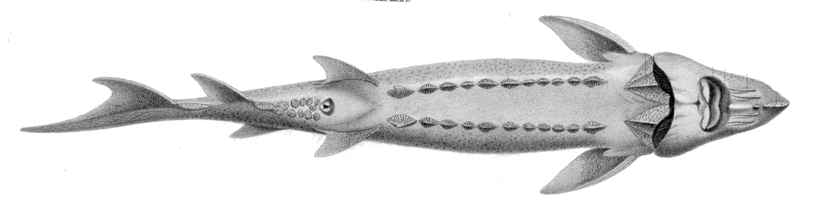

Есетра

Описание
Есетровите риби са едни от най-древните гръбначни животни.Вкаменени останки са датирани от преди 200 милиона години в периода Горна Креда т.е. от времето на динозаврите.Характерен за тях е хрущялния вътрешен скелети.Имат удължено рило и изтъняващо към опашката тяло. То е покрито с рогови образования с различни по форма и големина рогови шипчета. Есетрите са с четири мустачки – уникални осезателни органи, които предшестват беззъбата уста.В момента е приета таксономия, семейство Acipenseridae да се подразделя на две подсемейства, Acipenserinae, включително родовете Acipenser и Huso и Scaphirhynchinae, включително Scaphirhynchus родове и Pseudosaphirhynchus.Есетровото семейство обитава от субтропичен до субарктически води в Северна Америка и Евразия.В Северна Америка, те живеят по протежение на брега на Атлантическия океан от Мексиканския залив до Нюфаундленд, включително на Големите езера ,реките Мисури и Мисисипи , както и по западното крайбрежие в по-големите реки от Калифорния до Британска Колумбия.Есетрите се откриват по Атлантическото крайбрежие, включително и от Средиземноморския басейн, в реките, които се вливат в Черно, Азовско и Каспийско море (Дунав, Днепър, Волга и Дон), Северно-течащи реки на Русия, които се вливат в Северния ледовит океан (Oб , Енисей, Лена, Колима), в реките на Централна Азия (Амударя и Сърдаря) и езерото Байкал. В Тихия океан, те живеят в река Амур, на остров Сахалин и в Яндзъ и други реки в североизточен Китай.Всички видове са силно застрашени и уязвими,поради на комбинацията от унищожаване на местообитания, прекомерният риболов и замърсяването.
Стратегии и време на ухапване
Есетрите могат да бъдат уловени целогодишно, пролетта и есента са най-доброто време на годината, предпочитаното време за ухапване е, както често се случва, зори и здрач, но също толкова лесно може да дрънка през целия ден. Те използват четирите си щанги, за да опипат почвата за нещо за ядене, поемат храната с разгънатата си уста, която лежи отдолу и обикновено плуват от краищата на водата. Най-често е кръг след кръг около водата, точно до брега, където наклоненият бряг отговаря на същата дълбочина. По краищата, по острови, по препятствия. Тези, които могат да идентифицират своите маршрути за хранене, ще хванат, така че всичко-всичко и край-всичко не е "с какво", а "къде", дори ако риболовците предпочитат да си говорят за стръв. Стръвта за есетра не трябва да потъва в калта, защото за разлика от напр. Шаранът не удря есетра. Те са зависими от храната, лежаща на земята. Ако те влязат в съревнование с шарани, те губят, защото шаранът също може да копае дълбоко в калта. Прахосмукачка - положението на устата ясно показва, че есетрата може да поеме добре храната си отдолу. Тук също е ясно видима устата на есетрата от долната страна на главата. В тази страна обикновено можете да ловите есетра в търговски пъстървови езера или платени езера, но есетровите риби се събират от време на време и в други затворени води. Там те не могат да се размножават и следователно не представляват екологична заплаха за водата или природата.